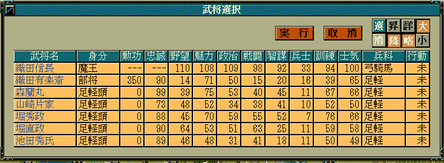

身分名型＆ カスタム::On_身分名表示直前(int 武将番号, int 身分) {
return NULL;
}

身分名型＆ カスタム::On_身分名表示直前(int 武将番号, int 身分) {
// 織田信長が「支配城数が20より多い」場合に、織田信長の「身分::大名」に対応する文字列が要求された時、「魔王」という文字列を代わりに返す。
// 又、織田信長の「身分::部将」に対応する文字列が要求された時、「赤鬼」という文字列を代わりに返す。
int iBushouID = 武将番号 - 1;
if (p武将戸籍情報[iBushouID].顔番号 == 顔番号::織田信長) {
if (身分 == 身分::大名) {
int iDaimyoID = p武将情報[iBushouID].所属大名【大名番号】 - 1;
if (Get_大名所持城数(iDaimyoID) > 20) {
身分名型 m = "魔王";
return m;
}
}
else if (状態 == 状態::部将) {
身分名型 m = "赤鬼";
return m;
}
}
// 変更しない場合NULL
return NULL;
}